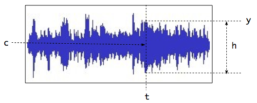

Signals and graphic signals
The graphic representation of a signal is approached with graphic signals. As illustrated in figure graphimg, the graphic representation of a signal could be viewed as a stream of a limited set of parameters : the y coordinate at a time t, a thickness h and a color c. A graphic signal is a composite signal including a set of 3 parallel signals that control these parameters. Thus the INScore library provides messages to create signals and to combine them into graphic signals.

A simple graphic signal, defined at time t by a coordinate y, a thickness h and a color c
The 'signal' static node.
A scene includes a static signal node, which OSC address is /ITL/scene/signal which may be viewed as a container for signals. It is also used for composing signals in parallel.
The signal node supports the get message that gives the list of the defined signals and also the get connect message that gives a list of all connections, but doesn't take any argument.
Example Querying the signal node:
/ITL/scene/signal get;
will give the enclosed signals definitions:
/ITL/scene/signal/y size 200 ;
/ITL/scene/signal/h size 200 ;
And :
/ITL/scene/signal get connect;
will give the signal connections :
/ITL/scene/signal connect cos object1:method1 ;
/ITL/scene/signal connect sin object2:method2 ;
Signal messages.
Signal messages can be sent to any address with the form /ITL/scene/signal/\textit{identifier}, where identifier is a unique signal identifier. The set of messages supported by a signal is the following:
- [1] push an arbitrary data count into the signal buffer. The expected data range is [-1,1]. Note that the internal data buffer is a ring buffer, thus data are wrapped when the data count if greater than the buffer size.
- [2] the size message sets the signal buffer size. When not specified, the buffer size value is the size of the first data message.
- [3] the default message sets the default signal value. A signal default value is the value returned when a query asks for data past the available values.
- [4] the get message without parameter gives the signal current values. The size and default parameters are used to query the signal size and default values.
- [5] the reset message clears the signal data.
- [6] the del message deletes the signal from the signal space. Note that it is safe to delete a signal even when used by a graphic signal.
Example Creating a signal with a given buffer size:
/ITL/scene/signal/mySig size 200;
Creating a signal with a given set of data (the buffer size will be the data size):
/ITL/scene/signal/mySig 0.\ 0.1\ 0.2\ 0.3\ 0.4\ 0.5\ 0.4\ 0.3\ 0.2\ 0.1\ 0.\ -0.1\ -0.2 ;
Composing signals in parallel.
Composing signals in parallel produces a signal which value at a time t is a vector of the composed signals values. Thus an additional read-only attribute is defined on parallel signals : the signal dimension which is size of the signals vector. Note that the dimension property holds also for simple signals.
The format of the messages for parallel signals is the following:
where
-
[1] defines a new signal composed of the signals given as parameters. A signal parameter is defined as:
-
[4] an identifier i.e. a signal name referring to an existing signal in the signal node.
-
[5] or as a float value. This form is equivalent to an anonymous constant signal holding the given value.
-
[2] sets the values of the signals using a projection string. See section sigproj.
- [3] in addition to the get format defined for signals, a parallel signal supports the get dimension message, that gives the number of simple signals in parallel. The dimension of a simple signal is 1.
Example Putting a signal y and constant signals 0.01 0. 1. 1. 1. in parallel:
/ITL/scene/signal/mySig set y 0.01 0. 1. 1. 1. ;
Querying the previously defined parallel signal:
/ITL/scene/signal/mySig get ;
# will give the following output:
/ITL/scene/signal/mySig set y 0.01 0. 1. 1. 1.
Note: For a parallel signal:
- the get size message gives the maximum of the components size.
- the get default message gives the default value of the first signal.
Distributing data to signals in parallel
When signals are in parallel, a projection string may be used to distribute data over each signal. Individual components of a parallel signal may be addressed using a projection string that is defined as follows:
The projection string is made of a index value, followed by an optional parallel marker (~), followed by an optional step value, all enclosed in brackets.
The index value n is the index of a target signal. When the parallel marker option is not present, the values are directed to the target signal. Indexes start at 0.
Example Sending data to the second component of a parallel signal:
/ITL/scene/signal/sig '[1]' 0.\ 0.1\ 0.2\ 0.3\ 0.4\ 0.5\ 0.4\ 0.3\ 0.2\ 0.1\ 0. ;
is equivalent to the following message (assuming that the second signal name is 's2'):
/ITL/scene/signal/s2 0.\ 0.1\ 0.2\ 0.3\ 0.4\ 0.5\ 0.4\ 0.3\ 0.2\ 0.1\ 0. ;
Note that:
- the message is ignored when n is greater than the number of signals in parallel. Default n value is 0.
- setting directly the values of a simple signal or as the projection of a parallel signal are equivalent.
The parallel marker (~) and the step value w options affect the target signals. Let's consider s[n] as the signal at index n. The values are distributed in sequence and in loop to the signals s[n], s[n+w]...s[m] where m is the greatest value of the index n+(w.i) that is less than the signal dimension. The default step value is 1.
Example Sending data to the second and third components of a set of 3 parallel signals:
/ITL/scene/signal/sig [1~] 0.1 0.2 ;
is equivalent to the following messages (assuming that the signal dimension is 3):
/ITL/scene/signal/sig [1] 0.1 ;
/ITL/scene/signal/sig [2] 0.2 ;
or to the following (assuming that the target signal names are 's2' and 's3'):
/ITL/scene/signal/s2 0.1;
/ITL/scene/signal/s3 0.2;
Connecting signals to graphic attributes.
A signal may be connected to one or several graphic attributes of an object. Only the common attributes (see section common) support this mechanism. When a connection between a signal and an object attribute is set, sending values to the signal is equivalent to send the values to the connected object attribute. A similar behavior could be achieved by sending the equivalent messages, however the connection mechanism is provided for efficiency reasons and in addition, it supports values scaling.
- the connect message makes a connection between a signal and one or several attributes of one or several objects.
- the disconnect message breaks a specific connection [1] or all the connections of a given signal [2], or all connections between a given signal and a given object [3].
- signal is a name referring to an existing component of the signal node.
- object is the name of an object (must be on the same hierarchy level than the signal node).
- attribute is the name of the object target attribute (same name as the method used to set the attribute, e.g. x, angle, etc.).
- an optional scaling feature is provided with the [low,high] suffix: signal values are expected to be between -1 and 1, the scaling suffix re-scale the input values between low and high.
Note: Connections are restricted to one-dimensional signals as source and to one-dimensional attribute as target. This is not a real limitation since any component of a multi dimensional attribute (e.g. color) is always available as a single attribute (e.g. red or blue).
Note: A connection can't cross the borders of a component i.e. the target object and the signal node should have the same parent.
Example Connecting signals to attributes:
# connects the values of sig1 to the red attribute of the 'rect' object
/ITL/scene/signal connect sig1 "rect:red";
# connects the values of sig2 to several objects and attributes
/ITL/scene/signal connect sig2 "rect:blue:x:rotatey[0,360]" "cursor:date[0,15]";
Disconnecting some of the previous connections :
/ITL/scene/signal disconnect sig2 "cursor:date" "rect:rotatey:blue";
Graphic signals.
A graphic signal is the graphic representation of a set of parallel signals. It is created in the standard scene address space. A simple graphic signal is defined by a parallel signal controling the y deviation value, the thickness and the color at each time position. The color is encoded as HSBA colors (Hue, Saturation, Brightness, Transparency). The mapping of a signal value ([-1,1]) to the HSBA color space is given by the table hsbamap.
| parameter | mapping | |
|---|---|---|
| hue | [-1,1] | corresponds to [-180,180] angular degree where 0 is red. |
| saturation | [-1,1] | corresponds 0 |
| brigthness | [-1,1] | corresponds 0 |
| transparency | [-1,1] | corresponds 0 |
HSBA color values.
A graphic signal responds to common component messages (section common). Its specific messages are the following:
- the set message is followed by the graph type and a signalIdentifier, where signalIdentifier must correspond to an existing signal from the signal address space. In case signalIdentifier doesn't exist, then a new signal is created at the signalIdentifier address with default values.
- the get dimension message gives the number of graphic signals in parallel (see section pgsignal).
The signal representation type is among:
- graph: a classical signal representation as illustrated in figure graphimg, where time is mapped to the x coordinate.
- fastgraph: a representation similar to the graph type, using a more efficient drawing strategy, but at the expense of a degraded graphic rendering.
- radialgraph: a signal representation where time is mapped to the polar coordinates. The rendering takes place in the ellipse enclosed in the object dimensions.
Example Creating a signal and its graphic representation:
/ITL/scene/signal/y size 200 ;
# use of constant anonymous signals for thickness and color
/ITL/scene/signal/sig set y 0.1 0. 1. 1. 1. ;
/ITL/scene/siggraph set graph sig ;
Graphic signal default values.
As mentionned above, a graphic signal expects to be connected to parallel signals having at least an y component, a graphic thickness component and HSBA components. Thus, from graphic signal viewpoint, the expected dimension of a signal should be equal or greater than 6. In case the signalIdentifier dimension is less than 6, the graphic signal will use the default values defined in table gsigdefault.
Graphic signal default values.
Parallel graphic signals.
When the dimension d of a signal connected to a graphic signal is greater than 6, then the input signal is interpreted like parallel graphic signals. More generally, the dimension n of a graphic signal is: where d is the dimension of the input signal.
When d is not a mutiple of 6, then the last graphic signal makes use of the default values mentionned above.
Example Creating parallel graphic signals:
/ITL/scene/signal/y1 size 200 ;
/ITL/scene/signal/y2 size 200 ;
# use of constant anonymous signals for thickness and color
/ITL/scene/signal/sig1 set y1 0.1 0. 1. 1. 1. ;
# use a different color for 'sig2'
/ITL/scene/signal/sig2 set y2 0.1 0.6 1. 1. 1. ;
# put 'sig1' and 'sig2' in parallel
/ITL/scene/signal/sig set sig1 sig2; # 'sig' dimension is 12
/ITL/scene/siggraph set graph sig;
Note: Using data projection may be convenient when the input signal represents interleaved data. For example, the projection string [n~6] distribute data over similar components of a set of graphic signals, where n represents the index of the graphic signal target component.